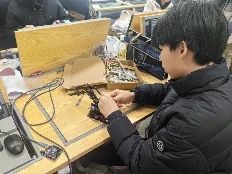
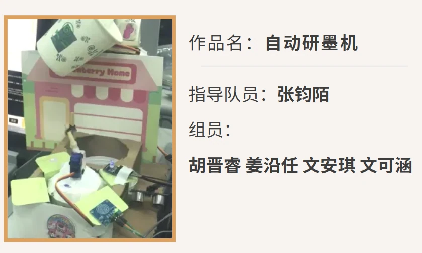
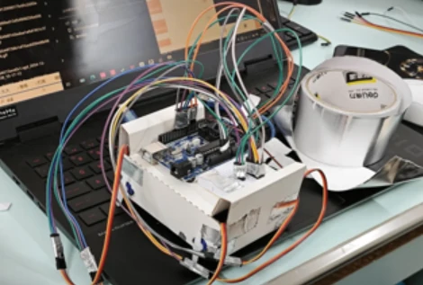
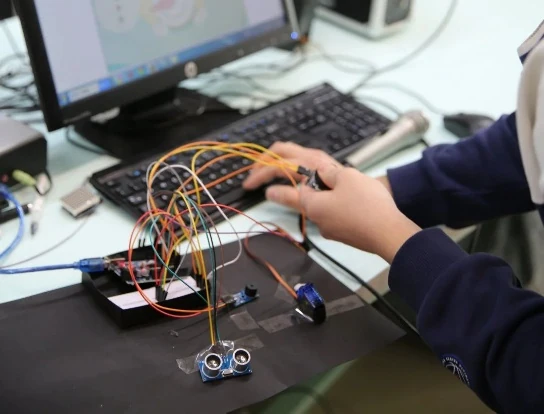

产教融合：教育赋能产业振兴
2025年清华大学学生寒假社会实践品牌项目总结报告
产教融合：教育赋能产业振兴
内容摘要：本报告基于清华大学“E起向未来”寒假社会实践项目，对常德智慧城市建设、永州新田县产业升级、哈尔滨冰雪经济发展、广安书法产业传承与创新以及柳州工业数智化转型等五个案例进行深入调研分析。调研发现，在国家大力推动产教融合、数字经济和乡村振兴的背景下，这些地区在科技赋能和产业升级方面取得了一定成效，但也面临着人才短缺、公众参与度不足、技术适配性等共性挑战。报告总结了各地因地制宜的经验，并提出通过产教融合、本土化数字化转型、完善人才培养机制以及加强政策协同等策略，推动中小城市和县域经济可持续发展，最终实现人才成长与地方发展同频共振。
关键词：产教融合，数字化转型，智慧城市，冰雪经济，书法产业
一、引言
当前，中国正处于经济转型升级与教育深化改革的关键阶段。国家层面，国务院、教育部近年来连续出台《国家产教融合建设试点实施方案》《关于深化产教融合的若干意见》等政策文件，明确提出推动教育与产业深度融合的战略目标。2024年《政府工作报告》进一步强调职业教育与普通教育的协同发展，要求高校结合学科优势服务地方经济，为社会实践项目提供了明确的政策指引。与此同时，《中国教育现代化2035》将“教育服务区域发展”列为重要任务，倡导高等教育资源向县域下沉，助力乡村振兴。教育部“教育赋能乡村振兴行动计划”更是具体提出通过科技支教、社会实践等形式，为欠发达地区注入创新动能。在这一政策背景下，数字经济与智慧城市建设成为国家“十四五”规划的核心内容，强调数字化技术需与实体经济深度融合，尤其要求中小城市探索符合自身实际的智慧化路径，避免盲目复制超大城市模式。
从行业视角看，传统产业的智能化转型压力.益凸显。以柳州、常德为代表的工业城市，面临制造业效率低下、能耗过高、人才供需失衡等挑战。柳州作为广西工业核心，汽车与机械制造产业密集，但绿色转型压力巨大；常德作为国家智慧城市试点，轻工业基础雄厚，却在数据共享、公众参与等领域存在明显短板。地方企业如柳工集团、常德烟厂对复合型技术人才需求激增，但职业教育体系与企业实际需求脱节，导致人才供给难以匹配产业升级节奏。与此同时，中小城市智慧化建设的特殊性逐渐显现。常德等三四线城市在智慧政务、数据流通等领域的探索，暴露出基础设施薄弱、公众认知不足等问题，亟需低成本、高效率的本土化解决方案。此外，县域中学的科技教育普惠性不足问题尤为突出，信息技术课程应试化严重，课外科技资源匮乏，学生创新能力培养滞后于社会发展需求。国家“双减”政策背景下，如何通过社会实践补充素质教育、激发青少年科创兴趣，成为教育领域的重要课题。
聚焦实践地区域背景，柳州、常德、广安、哈尔滨、永州等城市各具特色，但均面临科技赋能与产业升级的双重诉求。柳州依托《智能终端及机器人产业发展九条措施》，推动传统制造业向智能化、绿色化转型，但职业教育体系与企业技术需求的匹配度亟待提升；常德通过《新型智慧城市顶层设计》布局数字化转型，却在数据共享、公众宣传等领域遭遇瓶颈；广安、哈尔滨、永州则分别围绕红色文旅、冰雪经济、传统文化产业，探索科技赋能的新增长点。地方政府与高校的资源整合成为破局关键，例如柳州铁一中学与高校共建科创中心，常德数据局推动政企合作成立智慧城市研究院，均为实践项目提供了政策保障与落地场景。
二、各地特定产业发展情况分析
湖南常德智慧城市建设现状
常德市，作为湖南省的副中心城市，位于湘西北地区，是长江经济带的重要节点城市。近年来，常德市大力推进智慧城市建设，提出了“坚持科教先导，建设智慧常德”的战略，力求通过科技创新推动城市治理现代化。2016年，常德市城区正式列入国家智慧城市试点，智慧城市建设已成为常德发展的关键任务之一。
1.政策与规划
常德智慧城市建设的政策基础较为完善。2013年，常德市便提出了智慧城市建设的初步框架，明确了将“大数据、云计算”作为智慧城市发展的核心技术。2021年，常德市发布了《常德市新型智慧城市顶层设计（2021—2025年）》和《常德市新型智慧城市建设三年行动计划（2021—2023年）》，进一步明确了智慧城市的建设目标、重点任务和实施路径。这些政策文件为常德智慧城市建设提供了明确的指导和目标。
智慧城市建设的政策重点主要体现在“数字底座”的建设上，包括新一代网络基础设施、城市级智能感知网络等基础设施的建设要求。常德还出台了《常德市算力支撑能力提升行动方案（2022—2025年）》，提出“1+N+1+3+3”的建设思路，力求通过中心与边缘计算的结合，构建多层次的算力供给体系。
2.技术应用
常德的智慧城市建设依托大数据、云计算、物联网等技术，推动了城市基础设施的智能化升级。常德市政府依托“湘易办”平台进行政务服务数字化转型，推动了“一网统管”、城市应急指挥调度等跨部门、跨场景的智慧化应用。这些技术创新不仅提高了城市治理效率，还改善了市民的生活质量，使政务办理更加高效便捷。
产业数字化转型是常德智慧城市建设的另一个关键点。常德经开区的传统产业，如烟草、机械制造等，依托数据中心实现了智能化改造。通过物联网技术和云计算平台，企业实时采集生产数据并进行分析，从而优化生产参数，提高生产效率和产品质量。
然而，常德的技术应用也面临挑战。虽然大数据、云计算和物联网的基础设施逐步建设，但整体智能化水平仍然有限，尤其是在新兴技术的应用与创新方面，与一线城市如杭州、深圳等相比仍有差距。
3.数据共享与治理
常德在智慧城市建设过程中，逐步推动数据整合和共享。市数据局已集中管理了来自76家单位的2800多个目录和50亿条数据，建设了人口、法人、地理空间、视频等四大基础数据库。这些数据为政府的决策支持、社会治理、产业发展提供了有力的支撑。特别是在政务服务中，常德推出了“电子证照系统”，为企业和市民提供了更加便捷的服务，审批效率提升了40%以上。
尽管如此，常德的智慧城市建设在数据共享方面仍存在一定的局限。数据的开放性和可持续性存在不足，省级数据回流难度较大，影响了基层平台的建设效率。同时，数据标准和隐私保护方面仍有提升空间，部分领域的跨部门协作与信息共享尚未完全实现。
4.人才与公众参与
常德在智慧城市建设中面临人才匮乏的问题。市政府通过“人才强市”战略，努力引进高层次人才，并与华为等企业合作，引进技术专家，提升城市的科技创新能力。然而，由于中小城市的经济基础和人才吸引力有限，高层次人才的引进仍然是常德面临的挑战。
此外，智慧城市建设的社会公众参与度也有所欠缺。根据常德市的调查结果，尽管市民普遍认为智慧城市提高了政务服务的效率，但对智慧城市建设的具体内容了解较少，公众的获得感不强。特别是对于政府内部流程和城市治理的智能化改造，许多市民并未产生明显的感知，这意味着常德在智慧城市建设的宣传和普及方面仍需加强。
5.总结
常德市的智慧城市建设虽然起步较晚，但通过政策引导、技术创新和数据整合等多方面的努力，取得了一定成效。常德在推动智慧城市建设过程中，注重技术应用与数据共享的结合，形成了初步的智能化治理框架。与此同时，常德也面临着人才引进和公众参与度不足等挑战，未来仍需在数据规范、人才储备和社会普及方面加强工作。常德的经验为其他中小城市的智慧城市建设提供了宝贵的启示，尤其是在技术选择、规模控制和公众参与等方面具有一定的借鉴意义。
（二）湖南永州新田县智产业升级现状
党的二十大报告提出了“统筹职业教育、高等教育、继续教育协同创新，推进职普融通、产教融合、科教融汇”的战略要求，这一战略在新田县的实践中得到了鲜活的应用。2023年6.，国家发展改革委等8部门联合印发《职业教育产教融合赋能提升行动实施方案（2023-2025年）》，明确提出“推动产业需求更好融入人才培养全过程”的战略部署。作为湖南省乡村振兴重点县，新田县在国家政策的引导下，积极探索以“产业需求与教育供给双螺旋迭代”的创新模式，致力于突破资源约束，寻求跨越式发展。
根据数据，2024年新田县战略性新兴产业产值较2022年增长了32%，技术技能人才本地就业比例提升至68%。这些变化和成果与新田县独创的“产教双轨驱动”战略密不可分，形成了针对欠发达地区资源禀赋限制的有效突破路径。此种创新模式不仅是对国家《方案》中“构建教育和产业统筹融合发展格局”的积极响应，也是新田县破解传统发展瓶颈，推动县域经济转型升级的关键实践。
1.产业升级的数字化转型范式
（1）智能木业：全链条数字化重构传统产业
新田县鲁丽木业的智能车间展示了传统木业向工业4.0转型的显著成果。在车间内，德国库卡机械臂精准地将整株桉树切割成误差仅为0.03毫米的薄板。这种转型背后是投资2.3亿元的数字重构工程，涵盖了智能视觉分拣系统、国产MES系统以及数字孪生平台的应用。
通过这些数字化技术的应用，鲁丽木业成功实现了生产的智能化，不仅提高了生产效率，还显著减少了环境污染和能源消耗。例如，AI算法推荐的“复合板材搭配模型”将每.2500立方米板材加工的碎料率从11%降至2.3%，废料发电系统每年为厂区提供720万度清洁电力，相当于厂区总耗能的83%。
更令人印象深刻的是产教融合生态链的创新实践。通过与永州职业技术学院的合作，企业将其真实生产数据作为教学案例供学生使用。学生基于企业的生产数据开发的木材强度预测模型，不仅帮助企业优化生产流程，也为学生提供了宝贵的实践机会。这一“真实生产数据即教学案例”的模式，深刻体现了职业教育与产业发展的深度融合。
（2）特种陶瓷：数字孪生技术催生技术突破
新裕田企业的陶瓷生产线应用数字孪生技术，推动了技术突破。特别是在生产高温耐热材料，如氧化锆陶瓷锁止器的生产过程中，数字孪生技术将原本需要3个.的耐高温测试压缩至72小时，显著提升了生产效率。这项技术通过实时采集烧结数据，并与超算中心的算法优化结合，推动了材料的性能优化。
更为重要的是，数字化的转型不仅限于生产。中南大学的科研团队与新裕田的企业合作，通过建立工作站，实时获取生产数据并反馈到科研团队，促使产品在研发阶段就进行生产化优化。企业和学校间的这种密切合作，推动了技术的创新，并且加速了科研成果的转化应用。
2.教育革新与人才供给的生态重构
（1）课程体系的动态适配机制
新田县的教育改革采用了动态适配机制，将农业生产与技术教育相结合。例如，在新田一中，支教团队为学生设计了适配性课程，将电子技术与农业特色结合，设计了针对“三味辣椒”“富硒木耳”“石羊豆腐”三大特色农业的模块化课程。这些课程不仅提升了学生的科技创新能力，也促进了传统农业的现代化。
学生在实践项目中，基于Arduino和光敏传感器等硬件工具，进行辣椒光照管理、木耳菌包搬运和豆腐运输等实际农业问题的解决。这些课程使学生不仅学习了编程和硬件操作，还将所学知识应用于实际农业场景，解决了生产中的实际问题。
（2）教育生态的数字化转型实验
通过采用低门槛技术工具，支教团队推动了乡土化项目式学习（PjBL）。学生通过参与实际项目，如辣椒光周期调节、豆腐运输自动化等，增强了在地创新意识。研究表明，这种结合地方特色和技术工具的教育方式，能够有效提升学生的技术应用能力、农业问题意识以及地方文化认同感。
在这种创新的教育生态中，学生的认知从“为编程而拆卸设备”转向“为解决问题而研究技术”，实现了技术学习的具身性转向。最终，学生的创新能力得到了极大的提升，部分学生甚至能够自主开发新的算法和模型，推动农业生产的技术升级。
3.双轨驱动的协同发展模型
新田县通过“产教双轨驱动”战略，成功构建了产业与教育的数字孪生系统。这一系统实现了生产数据与教学案例库的双向流动，促进了教育内容的动态更新和产业需求的精准对接。在这一过程中，农业场景的实时数据转化为教学案例，帮助学生在课堂上学习并解决实际问题，而教育端反馈的技能和知识又直接支持了企业的生产需求。
这种双轨驱动的协同发展模型，不仅提升了学生的技术水平，也促进了产业的数字化转型。通过这一机制，新田县在教育和产业的融合中实现了良性循环，形成了教育与生产力同步提升的局面。
4.总结
新田县的经验表明，数字技术赋能的“双向穿透效应”能够突破传统的资源约束，推动产业升级和教育改革的协同发展。通过数字技术的应用，县域经济实现了从传统要素驱动向数字要素驱动的转型，教育体系也从单一的学科教育向产教融合的全方位教育体系迈进。新田县的改革实践为欠发达地区如何通过数字技术推动乡村振兴和县域经济发展提供了宝贵的经验和启示。
这场数字化转型不仅是技术的革新，更是教育理念和产业发展模式的深刻变革，推动了社会生产力和社会治理能力的整体提升。通过这种“数字双循环”机制，新田县为其他县域提供了可借鉴的创新模式，展示了数字化赋能乡村振兴的潜力和路径。
（三）哈尔滨冰雪经济发展现状
哈尔滨市，作为中国的冰雪文化发源地，长期以来以其独特的自然资源和丰富的历史文化，成为国内外游客的冰雪旅游首选目的地。得天独厚的地理条件和气候环境赋予了哈尔滨发展冰雪经济的天然优势，特别是在冰雪旅游、冰雪体育、冰雪装备等多个领域，形成了较为完善的产业基础和产业链条。近年来，哈尔滨市不断深化冰雪经济的布局，推动冰雪文化和冰雪产业深度融合，同时加速实现冰雪经济的智能化、数字化转型。
1.冰雪资源优势
哈尔滨市的冰雪资源丰富，是中国冬季旅游和冰雪产业的核心区域。冬季气候寒冷且漫长，积雪量大，哈尔滨是典型的寒冷地区，雪期长，气温低，天然冰面面积广阔，特别是松花江及其支流，提供了大规模冰雪运动的自然基础。这些天然条件使得哈尔滨成为国内外游客赴冰雪旅游、滑雪运动的首选地，冰雪产业也因此形成了独特的竞争力。
2.冰雪产业基础建设
哈尔滨不仅拥有丰富的冰雪资源，还具备较为成熟的产业基础。自上世纪80年代起，哈尔滨便开始了冰雪产业的探索和建设。随着“冰雪文化之都”的提出，哈尔滨市在冰雪产业领域加大了投资力度，冰雪经济逐步向多元化、专业化方向发展。从冰雪旅游、冰雪文化到冰雪装备制造等产业，哈尔滨市正在逐步完善冰雪产业的多领域布局。
特别是近年来，哈尔滨市政府积极推动冰雪产业的数字化、智能化转型。通过引入高科技设备，推动冰雪赛事的智能化管理，改进冰雪装备的技术水平，冰雪产业的效率和安全性得到了显著提升。随着2022年冬奥会的成功举办，全国掀起了冰雪运动的热潮，哈尔滨市的冰雪产业也因此迎来新一轮的快速发展。哈尔滨市在推动冰雪文化的同时，也在不断推动冰雪产业的创新与变革。
3.政策支持与政府引导
哈尔滨市在发展冰雪经济过程中得到了政府的大力支持。近年来，哈尔滨市出台了一系列政策文件，积极响应国家关于发展冰雪产业的战略部署。如《哈尔滨冰雪文化之都（冰雪经济）发展规划（2022—2030年）》明确提出，要大力发展冰雪产业，推动冰雪文化与经济的深度融合。哈尔滨市政府还通过政策优惠和资金扶持，支持冰雪产业的创新和升级，尤其是在冰雪装备的数字化、智能化方面加大投入。
在政策的引导下，哈尔滨市的冰雪产业不断壮大。从滑雪场到冰雪文化活动，从冰雪赛事到冰雪装备制造，哈尔滨市正在成为中国乃至世界重要的冰雪产业聚集地。随着亚冬会的临近，哈尔滨市进一步加强了冰雪产业与科技创新的深度融合，推动了冰雪产业的智能化、数字化升级。
4.电子信息技术在冰雪产业中的应用
近年来，电子信息技术在冰雪产业中的应用逐渐深入，成为推动产业升级的重要引擎。在赛事管理、装备智能化、环境监测等方面，哈尔滨市的冰雪产业已经开始引入物联网、大数据、云计算等前沿技术。
例如，在亚冬会的筹备过程中，哈尔滨市在赛事管理系统中引入了电子信息技术，采用云平台和物联网技术，提升了赛事的智能化水平。在滑雪装备制造领域，智能化装备的研发与生产也得到了技术支持，利用大数据和人工智能技术优化了装备的性能和生产流程。此外，冰雪环境监测系统的建设也成为了提升冰雪产业可持续发展的关键技术之一。
尽管如此，电子信息技术的深度应用仍面临一定的挑战。当前，哈尔滨市的冰雪产业智能化转型进程尚处于起步阶段，信息技术的应用仍存在一定的技术壁垒，尤其是在赛事保障、装备智能化等方面，依赖于核心技术的突破和创新。同时，专业人才的短缺也是制约冰雪产业进一步发展的一个重要因素。
5.市场需求与发展潜力
冰雪经济的快速发展与市场需求密切相关。随着冬奥会等重大赛事的举办，全国范围内的冰雪热潮愈发高涨。哈尔滨市作为冰雪文化的发源地，依托其优越的自然条件和深厚的冰雪文化底蕴，吸引了大量游客和投资。冰雪旅游、冰雪体育、冰雪装备制造等行业正在逐步形成庞大的产业体系。
哈尔滨市的冰雪经济发展潜力巨大。在政策支持和市场需求的双重推动下，哈尔滨市的冰雪产业有望进一步升级，特别是在智能化和数字化转型的背景下，哈尔滨市的冰雪产业有望迎来新的发展机遇。
6.总结
总体来看，哈尔滨市的冰雪经济具有得天独厚的资源优势和产业基础，随着政策的支持和技术的引入，冰雪产业正向着智能化、数字化方向迈进。尽管面临着技术创新不足和人才短缺等问题，但随着冰雪赛事的举行和市场需求的增长，哈尔滨市的冰雪产业依然拥有巨大的发展潜力。未来，哈尔滨市需要继续加大对电子信息技术的引入力度，进一步推动冰雪产业的智能化升级，从而在全国乃至全球的冰雪产业格局中占据更加重要的地位。
（四）广安市书法产业现状
广安市，作为四川省的重要城市，具有深厚的文化底蕴，尤其在书法文化方面，历史悠久、氛围浓厚。近年来，随着社会的不断发展和信息化进程的加快，广安市的书法产业在传承与创新的双重背景下，呈现出丰富多样的发展局面。书法作为传统文化的重要组成部分，依然在这座城市中占据重要位置。然而，随着时代的变化，广安市书法产业也面临着新的机遇与挑战，尤其是在教育普及、科技应用以及产业创新等方面，展现出了自身的特色和潜力。
1.书法活动与文化传承
广安市的书法文化活动丰富多彩，得益于广泛的书法爱好者和多个民间组织的推动。书法协会、硬笔书法协会以及书画院等组织在推动书法文化传承方面发挥了重要作用。这些组织不仅定期举办书法沙龙、展览和讲座，还积极参与到春节等传统节庆活动中，为市民提供了丰富的书法艺术体验。此外，书法文化在广安的.常生活中也处于一个较高的参与度，春节期间的“写春联”活动尤其受欢迎。通过这些活动，广安市的书法文化得到了较好的传承，尤其在老年人群体中，书法艺术依旧是一项深受喜爱的文化活动。
然而，广安市的书法活动也面临着一些实际困难。首先，地方财政的紧张使得书法协会和书画院的经费支持大幅缩减，从而限制了大型活动的开展规模。其次，由于书法教育和活动经费的不足，书法协会的教学和展示活动常常无法满足广泛群众的需求，影响了其长远发展的潜力。
2.书法教育的普及现状
广安市的书法教育自2018年起已经在中小学广泛普及，大部分学校每周都会安排书法课程。这一政策体现了政府对传统文化教育的重视，也让书法教育成为了孩子们.常学习的重要组成部分。然而，广安市书法教育在实际推进中仍面临不少挑战。首先，专业书法教师的数量远远不足，部分学校采用“接力式”教学模式，即非书法专业的教师代为教授书法，或者由美术教师代为讲授，导致了书法教育的专业性和系统性不足。其次，高中阶段的书法教育往往仅限于“练字”，注重学生字迹工整性，而忽视了书法艺术的深度和技巧，教学质量参差不齐。此外，书法教师的职称评定体系尚不完善，许多书法教师的职称评定仍然挂靠在美术或语文学科之下，缺乏独立的评价标准。这一体系的不足，导致了书法教育的专业性和教师的职业发展面临困难。
广安市的书法教育虽然在普及度上取得了一定成绩，但要提升教育质量和培养更多专业人才，仍需解决这些问题。值得注意的是，随着全国越来越多的高校设立书法专业，未来有望为广安的书法教育注入新的活力，进一步推动书法教育体系的完善。
3.书法产业的创新发展
广安市的书法产业在继承传统的基础上，也在尝试进行创新和转型。尽管目前广安书法产业的科技应用仍处于起步阶段，但一些新的科技应用已经开始为书法教育和产业发展带来变化。例如，智慧书法教室和AI技术的引入，为书法教育提供了新的解决方案。一些先进的书法教育工具，如华文众合第九代智慧书法教室，能够实时监测和纠正学生的握笔姿势，还能够通过AI技术进行硬笔书法的自动评测，这些创新无疑为书法教育带来了更高效、更精准的教学方式。
然而，广安市在书法产业的科技应用方面仍面临诸多困难。首先，许多书法教育者，尤其是资深的传统书法家，对现代科技的应用了解较少，导致了科技应用的接受度较低。其次，书法教育的传统观念较为根深蒂固，很多人认为书法应遵循传统教学模式，拒绝科技融入。这样的保守态度，不仅限制了书法教育的创新发展，也影响了学生对于科技融合书法教育的接受度。
尽管如此，广安市的书法工作者仍在努力推动书法的现代化发展路径。政府和一些书法组织正在尝试利用现代科技拓展书法文化的传播渠道，近年来，书法作品的展示不仅局限于传统的展览和讲座，许多书法作品也开始通过线上平台进行展示，拓宽了书法的受众群体。
4.书法培训机构的现状
在广安市，除了学校的书法教育，校外书法培训机构也在一定程度上补充了书法教育的不足。这些培训机构有的由民间书法艺术家承办，侧重于艺术性的教学；有的则是大型连锁培训机构，注重兴趣培养和技能训练。然而，广安市的书法培训市场并未形成统一的标准和规范，机构的质量参差不齐。一些培训机构的教师水平不高，教学内容单一，教学质量得不到保障，严重影响了家长和学生的选择。而部分盈利性机构为了吸引生源，夸大宣传、虚假宣传的情况也时有发生。由于缺乏行业监管和标准，广安市的书法培训市场面临较大的风险和不确定性。
5.总结
总体来看，广安市的书法产业在传承和创新中都取得了一定的成效，书法活动和教育在当地得到了广泛的普及和推广，民间书法艺术家在文化传承中发挥了重要作用。然而，书法产业的发展仍面临着一些现实问题，如专业师资匮乏、经费支持不足、科技应用滞后等。这些问题需要政府和社会各界的共同努力，才能够推动广安市书法产业更好地发展。
（五）广西柳州工业数智化转型和数智化人才培养现状
柳州市作为广西的工业强市，在推动工业数智化转型和数智化人才培养方面取得了显著的成绩。通过政策的支持与推动，柳州市的传统产业正在加速向智能化、数字化转型，而新兴的智能终端与机器人产业也逐渐崭露头角。与此同时，柳州市在数智化人才的培养方面也采取了一系列措施，以适应未来数字经济和智能化产业发展的需求。然而，在这一过程中，柳州市仍面临一些挑战，尤其是在人才供给、教育体系的创新以及产业和教育的深度融合等方面。
1.柳州市工业数智化转型现状
柳州市的工业数智化转型主要体现在钢铁、机械电动制造、汽车及智能终端等四个核心领域。
首先，柳州市的钢铁行业，尤其是柳钢集团，通过引入先进的智能技术，推动生产的自动化与智能化。例如，柳钢通过建设无人化行车系统、智能化调度平台和数字孪生系统，提升了生产效率和安全性，实现了钢铁生产的高效管理和可视化操作。此外，柳钢还依托信息化技术在安全管控方面取得突破，应用机器视觉和安全预警系统，极大地提升了生产环境中的安全管理水平。
在机械与电动制造领域，柳工集团正在加速全面智能化进程。柳工通过建设全球研发中心和试验中心，推动机械设备的智能化、绿色化转型。柳工的智能制造包括无人驾驶和自主作业设备的研发，以及智慧工厂的建设，提升了整体制造效率和智能化水平。此外，柳工还在电动化领域进行了深入布局，推出了一系列电动化产品，并在行业内推动了电动土方机械的行业标准化。
在柳州市的汽车产业方面，柳州的三大汽车企业，如上汽通用五菱、东风柳汽等，正积极推动汽车的智能化、电动化和绿色化发展。这些企业不仅在智能制造、数字孪生和新能源技术方面取得了显著进展，还通过柔性化生产线和高效的电动驱动系统实现了更高效的生产模式。同时，这些企业还在技术创新上不断发力，通过智能化技术推动汽车产品的升级，进一步提升了柳州市汽车产业的竞争力。
此外，柳州市还大力发展智能终端和机器人产业，致力于通过科技创新推动产业升级。这些措施包括推动机器人产业的技术创新，提升智能制造的生产效率和精准度，同时推动更多智慧政务、智慧物流和智慧教育等应用场景的落地。
2.柳州市数智化人才培养现状
随着工业数智化转型的不断推进，柳州市在数智化人才培养方面也取得了诸多进展。然而，依然面临着一定的人才供需失衡问题，尤其是高技能数智化人才的短缺。
在中小学教育方面，柳州市的信息技术教育普及较快，但大部分课程内容仍停留在应试教育层面。虽然柳州市已将信息技术纳入基础教育体系，且每周都有一定时间的编程和技术课程，但这些课程通常侧重于基础知识的学习，缺乏实际的项目实践和跨学科的综合应用。特别是在一些偏远地区，信息教育的普及程度较低，学生对于数字化和智能化技术的理解较为局限。此外，柳州市的中小学信息教育课程多以升学考试为导向，难以激发学生对于数智化技术的深层次兴趣和创新思维。
在职业教育方面，柳州市正在推动数字经济相关专业的建设和改革，例如在柳州市城市职业学院开设了大数据、虚拟现实、数字化管理等课程，提升了学生在数字技术领域的专业素养。然而，现有职业教育体系仍难以满足企业对高技能数智化人才的需求。尤其是在智能网联汽车、大数据、云计算等新兴领域，柳州市的职业教育培养的专业人才仍显不足。大多数专业课程内容偏向传统，缺乏与行业前沿技术的对接，导致很多学生毕业后难以直接适应企业的需求。
柳州市的高等教育体系，特别是在数字化和智能制造领域，虽取得了一定成效，但与产业需求之间仍然存在较大的差距。虽然一些高校开设了数字经济相关专业，并且逐步推动产教融合，但由于课程内容和企业实际需求之间存在脱节，许多毕业生无法及时为柳州市的产业发展提供足够的支持。
同时，柳州市的博士后工作站和创新实践基地正在逐步建设中，目前已有多家博士后科研平台和创新实践基地，致力于推动人才培养与产业创新的结合。然而，整体上，柳州市在数字技术、高端制造和智能化领域的高端人才储备仍然不足，产业和学界之间的人才供给与需求存在明显的失衡。
3.总结
柳州市在推进工业数智化转型和数智化人才培养方面已经取得了显著的成绩。钢铁、机械、电动制造、汽车及智能终端等传统行业的智能化、数字化转型正在稳步推进，同时，柳州市在新兴产业，尤其是机器人产业和智能终端产业方面，积极布局，推动了生产力的提升。然而，柳州市在人才培养方面仍面临一定的挑战，尤其是中小学信息化教育应试化问题严重，高校与职业教育系统的改革仍需加速，产业与教育之间的深度融合尚未完全实现。为了更好地支持柳州市的工业数智化转型，未来需要更加重视数智化人才的培养，推动教育体系的改革，提升人才供给的质量与数量，以适应未来产业发展的需求。
三、产教融合可行性分析
在国家全面推进经济高质量发展与教育现代化建设的宏观背景下，产教融合作为连接教育供给侧与产业需求侧的核心纽带，已成为破解地方发展瓶颈、促进区域协调创新的重要路径。本报告所调研的常德、永州新田、哈尔滨、广安、柳州等地实践表明，产教融合的可行性并非仅停留于政策倡导层面，而是深深植根于地方产业转型的现实需求、教育资源整合的可操作性以及技术赋能的适应性之中。从政策基础的夯实、经济逻辑的自洽到社会效益的溢出，产教融合的推进已具备多维度的实践支撑和发展潜能。
从政策层面看，产教融合的顶层设计与地方实践的耦合性日益增强。国家层面，《国家产教融合建设试点实施方案》《职业教育产教融合赋能提升行动实施方案（2023-2025年）》等文件的密集出台，不仅明确了职业教育与普通教育协同发展的战略定位，更通过财税优惠、土地划拨、金融支持等配套政策，为地方政府、企业与高校的合作提供了制度保障。例如，柳州在工业数智化转型中依托《智能终端及机器人产业发展九条措施》，将校企合作的技术攻关纳入市级重点项目库，享受研发费用加计扣除等优惠政策；新田县通过省级专项补贴撬动企业与职业院校共建实训基地，形成“教学—研发—生产”一体化的闭环生态。此类实践验证了政策工具对产教融合的催化作用，同时也反映出地方政府在细化政策执行时的灵活性——通过将国家战略分解为产业目录清单、人才需求白皮书等操作性文本，有效降低了校企合作的信息不对称成本，使产教融合从抽象概念转化为可量化、可评估的具体行动。
在经济逻辑上，产教融合的可行性源于其对生产要素的重构能力和对边际效益的提升作用。在传统发展模式下，县域经济受制于人才流失、技术滞后、资本匮乏等结构性矛盾，产业升级往往陷入“低水平循环”。而新田县的经验表明，通过构建“产业需求与教育供给双螺旋迭代”模型，可将有限资源转化为动态竞争优势：一方面，职业院校通过嵌入式课程开发（如针对富硒木耳种植的传感器技术课程），使教育产出直接服务于特色农业的数字化转型；另一方面，企业将真实生产数据开放为教学案例库，反向推动教育内容与产业前沿同步更新。这种双向渗透机制，本质上是通过人力资本增值和技术扩散效应，突破县域经济的资源天花板。数据显示，新田县战略性新兴产业产值两年内增长32%，而同期职业教育毕业生本地就业率提升至68%，印证了产教融合对生产效率与人才留存率的双重提振效应。更进一步，柳州铁一中学与高校共建科创中心的案例揭示出，即便是基础教育阶段，通过项目式学习引导学生解决真实产业问题（如汽车零部件3D建模），也能提前培育产业所需的创新思维，这种“教育前置”策略实质上延长了人力资本投资的回报周期，增强了区域经济发展的可持续性。
技术革命的纵深发展为产教融合提供了前所未有的赋能工具。物联网、大数据、数字孪生等技术的普及，使得教育场景与生产场景的时空界限趋于消弭。常德智慧城市研究院通过搭建城市级数据中台，将市政管理中的交通流量监测、环境质量分析等实时数据同步至高校实验室，使城市规划专业的学生能在虚拟仿真环境中验证设计方案；哈尔滨冰雪装备制造企业联合高校建立的“冰雪产业数字孪生平台”，允许学生在虚拟空间调试滑雪器材的空气动力学参数，大幅降低试错成本。这些案例表明，数字技术不仅重构了产教交互的物理载体，更重要的是创造了价值共创的新模式——企业的技术难题转化为院校的科研课题，院校的理论成果通过快速原型验证反哺产业升级，形成“问题提出—知识生产—技术转化”的加速通道。值得关注的是，中小城市在技术应用策略上展现出鲜明的实用主义特征：不同于超大城市追逐尖端技术的“高举高打”，柳州选择国产MES系统而非国际品牌、广安采用低成本的智慧书法教室而非高端VR设备，这种“适度技术”路线既控制了转型风险，又确保了技术工具与本地人力资源素质的匹配度，为产教融合的可持续发展奠定了适应性基础。
社会效益的多元溢出进一步强化了产教融合的合法性根基。在乡村振兴战略框架下，产教融合不仅是经济行为，更承载着缩小城乡差距、促进社会公平的使命。新田县通过“农业场景+技术教育”的乡土化课程设计，使农村学生在解决辣椒光照管理、菌包搬运等实际问题的过程中，同步获得职业技能与地方认同感的双重提升；广安市将书法教育从精英艺术推向大众美育，借助AI评测系统帮助留守儿童提升书写能力，在文化传承中嵌入教育公平的维度。这些实践表明，当产教融合跳出单纯的“订单培养”“顶岗实习”等功利化框架，转而关注人的全面发展与社会资本积累时，其产生的正外部性将远超经济范畴——柳州铁一中学参与智慧工厂项目的学生团队中，78%表示愿意留在本地就业；常德智慧城市建设项目通过公众科普活动，使市民对数字化转型的支持率提升23个百分点。这种社会共识的凝聚，为产教融合的长远推进构筑了深厚的民意基础。
当然，产教融合的全面落地仍需克服深层障碍。教育体系的刚性考核机制与产业的敏捷需求之间的矛盾尚未根本缓解，如柳州职业教育仍存在“教材更新周期滞后于技术迭代速度”的顽疾；利益分配机制的不完善导致校企合作稳定性不足，部分企业担忧技术秘密泄露而不愿开放核心数据；县域层面的财政约束也使实训基地建设、双师型教师培养等关键环节面临资金短缺。对此，需要构建“政府主导—市场调节—社会参与”的协同治理网络：政府部门可通过“创新券”“产教融合指数”等政策工具，激励企业释放更多实习岗位和技术资源；行业协会应牵头制定产教对接标准，建立跨区域资源共享平台；高校需改革教师评价体系，将技术转化成效纳入职称评审指标。唯有如此，方能将产教融合从零散的试点探索升华为系统化的制度创新，真正实现教育变革与产业振兴的同频共振。
综观全局，产教融合的可行性既源自国家战略与地方创新之间的政策共振，也得益于技术进步对生产关系重塑的历史机遇，更离不开以人为本的价值导向对社会力量的动员。当教育不再是被动适应产业的追随者，而是主动定义未来的创造者；当产业不止步于短期用工需求的满足，而是致力于人力资本的长期投资——这种深刻的范式转换，正是中国县域经济突破发展困局、走向内生增长的希望所在。
四、总结
在全国经济转型升级与教育深化改革的关键阶段， “E起向未来”寒假社会实践项目以“产教融合”为核心，通过跨区域的深度调研与实践，揭示了中小城市与县域经济在科技赋能与产业升级中的创新路径与共性挑战。从湖南常德的智慧城市建设到哈尔滨的冰雪经济数字化转型，从永州新田的产教双轨驱动到广安书法产业的现代化探索，再到柳州工业的数智化转型，各地案例既展现了因地制宜的发展智慧，也凸显了国家战略与地方实践的有机联动。
结合产教融合主题，本次品牌项目还利用单片机实现了各种相关产教融合案例共计30余件，以下为部分示例：


柳州支队：调研工业数字化转型 广安支队：调研传统书法产业的传承与创新
利用单片机实现工业智能化流水线机械臂 利用单片机实现了自动研墨机


新田支队：调研新田县种植农业 哈尔滨支队：调研电子信息技术赋能冰雪经济
使用单片机制成农田灌溉系统原型机 使用单片机制成“冰壶训练辅助系统”测速原型机
X、参考文献
[1] 哈尔滨市人民政府. 哈尔滨冰雪文化之都（冰雪经济）发展规划（2022—2030 年）[Z]. 哈尔滨: 哈尔滨市人民政府, 2022.
[2] 哈尔滨市人民政府. 哈尔滨市冰雪旅游内涵式高质量发展“百.行动”实施方案 [Z]. 哈尔滨: 哈尔滨市人民政府, 2024.
[3] 国务院.国务院办公厅关于以冰雪运动高质量发展激发冰雪经济活力的若干意见 [Z]. 北京：国务院，2024.
[4] 黑龙江省人民政府. 黑龙江省支持冰雪经济发展若干政策措施 [Z]. 哈尔滨：黑龙江省人民政府，2022.
[5]邱曙东.中国书法文化的传播、传承与创新[J].人民论坛,2023,(07): 104-106.
[6]王垚,孙超平.“互联网+书法”领域的文化产业创新研究[J].牡丹江师范学院学报(哲学社会科学版),2016,(04):48-51+72.DOI:10.13815/j.cnki. jmtc(pss).2016.04.010.
[7]以饱满热情推进书法事业实现新发展[N].中国书法报,2024-09-10 (001).DOI:10.28129/n.cnki.ncsfb.2024.000043.
[8]柳州新闻网. (2023, August 30). 工业经济总量稳居广西第一，柳州还有这些“金字招牌”！ https://news.qq.com/rain/a/20230830A0A7SS00
[9]柳州.报. (2024, December 13). 向智能终端及机器人产业迈进——柳州工业竞逐新赛道. http://tzcjj.liuzhou.gov.cn/xwzx/lzdt/t19700101_3564570.shtml
[10]柳工新闻. (2024, June 6). 绿色智慧 创新引领未来——柳工电动化发展十周年综述. 柳工新闻.
[11]Liao, F. F. (2022). 加快柳钢集团智能化转型引领广西钢铁工业高质量发展. 桂海论丛, 38(5), 116-120.
[12] 宋刚, 邬伦. 创新2.0 视野下的智慧城市[J]. 北京邮电大学学报（社会科学版）, 2012, 14(4): 1-8.
[13] 中共北京市委, 北京市人民政府. 关于进一步深化“接诉即办”改革工作的意见[A]. 2020.
[14] 张蔚文, 金晗, 冷嘉欣. 智慧城市建设如何助力社会治理现代化？—— 新冠疫情考验下的杭州“城市大脑”[J]. 浙江大学学报（人文社会科学版）, 2020, 50(4): 117-129.
[15] 常德市数据局（常德市行政审批服务局）. 智慧常德建设的调研报告[R]. 2016.
[16] 湖南省统计局. 常德市2023 年国民经济和社会发展统计公报[A]. 2024.
[17] 深圳市政务服务数据管理局, 深圳市发展改革委. 深圳市数字政府和智慧城市 “十四五”发展规划[A]. 2022.
[18] 深圳市市场监督管理局. 智慧城市数据账户资源共享应用规范: DB4403/T 573—2024[S]. 2024.
[19] 郑烨, 吴昊, 何晴科. 政府数字化转型何以提升城市治理质量?——基于国内五个超大城市的多案例考察[J]. 中共天津市委党校学报, 2025, 27(1): 60- 73.